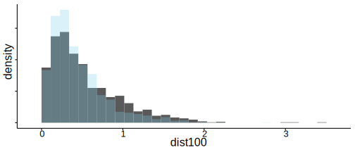
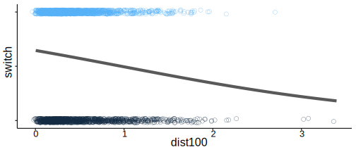
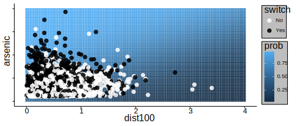
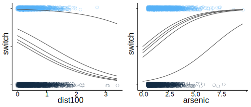

This vignette explains how to estimate generalized linear models (GLMs) for binary (Bernoulli) and Binomial response variables using the stan_glm function in the rstanarm package.
The four steps of a Bayesian analysis are
Steps 3 and 4 are covered in more depth by the vignette entitled “How to Use the rstanarm Package”. This vignette focuses on Step 1 when the likelihood is the product of conditionally independent binomial distributions (possibly with only one trial per observation).
For a binomial GLM the likelihood for one observation \(y\) can be written as a conditionally binomial PMF \[\binom{n}{y} \pi^{y} (1 - \pi)^{n - y},\] where \(n\) is the known number of trials, \(\pi = g^{-1}(\eta)\) is the probability of success and \(\eta = \alpha + \mathbf{x}^\top \boldsymbol{\beta}\) is a linear predictor. For a sample of size \(N\), the likelihood of the entire sample is the product of \(N\) individual likelihood contributions.
Because \(\pi\) is a probability, for a binomial model the link function \(g\) maps between the unit interval (the support of \(\pi\)) and the set of all real numbers \(\mathbb{R}\). When applied to a linear predictor \(\eta\) with values in \(\mathbb{R}\), the inverse link function \(g^{-1}(\eta)\) therefore returns a valid probability between 0 and 1.
The two most common link functions used for binomial GLMs are the logit and probit functions. With the logit (or log-odds) link function \(g(x) = \ln{\left(\frac{x}{1-x}\right)}\), the likelihood for a single observation becomes
\[\binom{n}{y}\left(\text{logit}^{-1}(\eta)\right)^y \left(1 - \text{logit}^{-1}(\eta)\right)^{n-y} = \binom{n}{y} \left(\frac{e^{\eta}}{1 + e^{\eta}}\right)^{y} \left(\frac{1}{1 + e^{\eta}}\right)^{n - y}\]
and the probit link function \(g(x) = \Phi^{-1}(x)\) yields the likelihood
\[\binom{n}{y} \left(\Phi(\eta)\right)^{y} \left(1 - \Phi(\eta)\right)^{n - y},\]
where \(\Phi\) is the CDF of the standard normal distribution. The differences between the logit and probit functions are minor and – if, as rstanarm does by default, the probit is scaled so its slope at the origin matches the logit’s – the two link functions should yield similar results. With stan_glm, binomial models with a logit link function can typically be fit slightly faster than the identical model with a probit link because of how the two models are implemented in Stan. Unless the user has a specific reason to prefer the probit link, we recommend the logit simply because it will be slightly faster and more numerically stable.
In theory, there are infinitely many possible link functions, although in practice only a few are typically used. Other common choices are the cauchit and cloglog functions, which can also be used with stan_glm (every link function compatible withglm will work with stan_glm).
A full Bayesian analysis requires specifying prior distributions \(f(\alpha)\) and \(f(\boldsymbol{\beta})\) for the intercept and vector of regression coefficients. When using stan_glm, these distributions can be set using the prior_intercept and prior arguments. The stan_glm function supports a variety of prior distributions, which are explained in the rstanarm documentation (help(priors, package = 'rstanarm')).
As an example, suppose we have \(K\) predictors and believe — prior to seeing the data — that \(\alpha, \beta_1, \dots, \beta_K\) are as likely to be positive as they are to be negative, but are highly unlikely to be far from zero. These beliefs can be represented by normal distributions with mean zero and a small scale (standard deviation). To give \(\alpha\) and each of the \(\beta\)s this prior (with a scale of 1, say), in the call to stan_glm we would include the arguments prior_intercept = normal(0,1) and prior = normal(0,1).
If, on the other hand, we have less a priori confidence that the parameters will be close to zero then we could use a larger scale for the normal distribution and/or a distribution with heavier tails than the normal like the Student t distribution. Step 1 in the “How to Use the rstanarm Package” vignette discusses one such example.
With independent prior distributions, the joint posterior distribution for \(\alpha\) and \(\boldsymbol{\beta}\) is proportional to the product of the priors and the \(N\) likelihood contributions:
\[f\left(\alpha,\boldsymbol{\beta} | \mathbf{y},\mathbf{X}\right) \propto f\left(\alpha\right) \times \prod_{k=1}^K f\left(\beta_k\right) \times \prod_{i=1}^N { g^{-1}\left(\eta_i\right)^{y_i} \left(1 - g^{-1}\left(\eta_i\right)\right)^{n_i-y_i}}.\]
This is posterior distribution that stan_glm will draw from when using MCMC.
When the logit link function is used the model is often referred to as a logistic regression model (the inverse logit function is the CDF of the standard logistic distribution). As an example, here we will show how to carry out a few parts of the analysis from Chapter 5.4 of Gelman and Hill (2007) using stan_glm.
Gelman and Hill describe a survey of 3200 residents in a small area of Bangladesh suffering from arsenic contamination of groundwater. Respondents with elevated arsenic levels in their wells had been encouraged to switch their water source to a safe public or private well in the nearby area and the survey was conducted several years later to learn which of the affected residents had switched wells. The goal of the analysis presented by Gelman and Hill is to learn about the factors associated with switching wells.
To start, we’ll use dist (the distance from the respondent’s house to the nearest well with safe drinking water) as the only predictor of switch (1 if switched, 0 if not). Then we’ll expand the model by adding the arsenic level of the water in the resident’s own well as a predictor and compare this larger model to the original.
After reading in the data from the 'wells.csv.xz' file, we first rescale the dist variable (measured in meters) so that it is measured in units of 100 meters. If we leave dist in its original units then the corresponding regression coefficient will represent the effect of the marginal meter, which is too small to have a useful interpretation.
# Load data and create dist100 variable
wells <- read.csv(file.path("data", "wells.csv.xz"))
wells$dist100 <- wells$dist / 100Before estimating any models we can visualize the distribution of dist100 in the data:
ggplot(wells, aes(x = dist100, y = ..density..)) +
geom_histogram(data = subset(wells, switch == 0)) +
geom_histogram(data = subset(wells, switch == 1), fill = "skyblue", alpha = 0.3) 
In the plot above the blue bars correspond to the 1737 residents who said they switched wells and the bars with the darker outline show the distribution of dist100 for the 1283 residents who didn’t switch. As we would expect, for the residents who switched wells, the distribution of dist100 is more concentrated at smaller distances.
A Bayesian version of Gelman and Hill’s initial logistic regression model can be estimated using the stan_glm function. Here we’ll use a Student t prior with 7 degrees of freedom and a scale of 2.5, which, as discussed above, is a reasonable default prior when coefficients should be close to zero but have some chance of being large.
library(rstanarm)
t_prior <- student_t(df = 7, location = 0, scale = 2.5)
fit1 <- stan_glm(switch ~ dist100, data = wells,
family = binomial(link = "logit"),
prior = t_prior, prior_intercept = t_prior,
chains = CHAINS, cores = CORES, seed = SEED, iter = ITER)(Intercept) dist100
0.602 -0.622 The formula, data and family arguments to stan_glm are specified in exactly the same way as for glm. We’ve also added the optional additional arguments chains (how many chains we want to execute), cores (how many cores we want the computer to utilize) and seed (for reproducibility). You can read about other possible arguments in the stan_glm documentation (help(stan_glm, package = 'rstanarm')).
To get a sense for the uncertainty in our estimates we can use the posterior_interval function to get Bayesian uncertainty intervals. The uncertainty intervals are computed by finding the relevant quantiles of the draws from the posterior distribution. For example, to compute 50% intervals we use:
round(posterior_interval(fit1, prob = 0.5), 2) 25% 75%
(Intercept) 0.56 0.65
dist100 -0.70 -0.55For more on posterior_interval and interpreting the parameter estimates from a Bayesian model see Step 2 in the “How to Use the rstanarm Package” vignette.
Using the coefficient estimates we can plot the predicted probability of switch = 1 (as a function of dist100) together with the observed outcomes:
# Predicted probability as a function of x
pr_switch <- function(x, ests) plogis(ests[1] + ests[2] * x)
# A function to slightly jitter the binary data
jitt <- function(...) {
geom_point(aes_string(...), position = position_jitter(height = 0.05, width = 0.1),
size = 2, shape = 21, stroke = 0.2)
}
ggplot(wells, aes(x = dist100, y = switch, color = switch)) +
scale_y_continuous(breaks = c(0, 0.5, 1)) +
jitt(x="dist100") +
stat_function(fun = pr_switch, args = list(ests = coef(fit1)),
size = 2, color = "gray35")
The plot shows that under this model the predicted probability of switching is a decent bit above 50% for residents living very close to wells with safe drinking water. As expected, larger values of dist100 are associated with lower predicted probabilities of switching. At the extreme (\(\approx 300\) meters), the probability is about 25%.
Next, we incorporate an additional predictor into the model: the arsenic level of water in the respondent’s well. According to Gelman and Hill, “At the levels present in the Bangladesh drinking water, the health risks from arsenic are roughly proportional to exposure, and so we would expect switching to be more likely from wells with high arsenic levels” (pg. 90). We only need to change the formula, so we can use the update function:
fit2 <- update(fit1, formula = switch ~ dist100 + arsenic) (coef_fit2 <- round(coef(fit2), 3))(Intercept) dist100 arsenic
0.004 -0.900 0.459 As expected the coefficient on arsenic is positive. Net of distance, an increase of 1 in the concentration of arsenic is associated with an increase of 0.459 in the log-odds of well-switching. The plot below shows distance on the x-axis and arsenic level on the y-axis with the predicted probability of well-switching mapped to the color of the background tiles (the lighter the color the higher the probability). The observed value of switch is indicated by the color of the points.
pr_switch2 <- function(x, y, ests) plogis(ests[1] + ests[2] * x + ests[3] * y)
grid <- expand.grid(dist100 = seq(0, 4, length.out = 100),
arsenic = seq(0, 10, length.out = 100))
grid$prob <- with(grid, pr_switch2(dist100, arsenic, coef(fit2)))
ggplot(grid, aes(x = dist100, y = arsenic)) +
geom_tile(aes(fill = prob)) +
geom_point(data = wells, aes(color = factor(switch)), size = 2, alpha = 0.85) +
scale_fill_gradient() +
scale_color_manual("switch", values = c("white", "black"), labels = c("No", "Yes"))
We can see that the black points (switch=1) are predominantly clustered in the upper-left region of the plot where the predicted probability of switching is highest.
Another way we can visualize the data and model is to follow Gelman and Hill and create separate plots for varying the arsenic level and distance. Here we’ll plot curves representing the predicted probability of switching for the minimum, maximum and quartile values of both variables.
library(gridExtra)
# Quantiles
q_ars <- quantile(wells$dist100, seq(0, 1, 0.25))
q_dist <- quantile(wells$arsenic, seq(0, 1, 0.25))
base <- ggplot(wells) + xlim(c(0, NA)) +
scale_y_continuous(breaks = c(0, 0.5, 1))
vary_arsenic <- base + jitt(x="arsenic", y="switch", color="switch")
vary_dist <- base + jitt(x="dist100", y="switch", color="switch")
for (i in 1:5) {
vary_dist <-
vary_dist + stat_function(fun = pr_switch2, color = "gray35",
args = list(ests = coef(fit2), y = q_dist[i]))
vary_arsenic <-
vary_arsenic + stat_function(fun = pr_switch2, color = "gray35",
args = list(ests = coef(fit2), x = q_ars[i]))
}
grid.arrange(vary_dist, vary_arsenic, ncol = 2)
We can compare our two models (with and without arsenic) using an approximation to Leave-One-Out (LOO) cross-validation, which is a method for estimating out of sample predictive performance and is implemented by the loo function in the loo package:
(loo1 <- loo(fit1))Computed from 500 by 3020 log-likelihood matrix
Estimate SE
elpd_loo -2040.5 10.4
p_loo 2.3 0.1
looic 4080.9 20.7
All Pareto k estimates OK (k < 0.5)(loo2 <- loo(fit2))Computed from 500 by 3020 log-likelihood matrix
Estimate SE
elpd_loo -1968.4 15.6
p_loo 3.2 0.1
looic 3936.9 31.1
All Pareto k estimates OK (k < 0.5)compare(loo1, loo2)elpd_diff se weight1 weight2
72.0 12.1 0.0 1.0 These results favor fit2 over fit1 by a wide margin. The estimated difference in elpd (the expected log pointwise predictive density for a new dataset) is so much larger than its standard error that the model weight for fit2 is 1. LOO penalizes models for adding additional predictors (this helps counter overfitting), but in this case fit2 represents enough of an improvement over fit1 that the penalty for including arsenic is negligible (as it should be if arsenic is an important predictor).
The vignette for the stan_lm function also has an example of using the loo function where the results are quite a bit different from what we see here and some important additional considerations are discussed.
Although the example in this vignette focused on a binary response variable, we can use nearly identical code if we have the sum of multiple binary variables. For example, image a hypothetical dataset similar to the well-switching data but spanning multiple villages. Each observation (each row) of this data.frame corresponds to an entire village: switch[i] is the number of ‘yes’ responses to the well-switching question for village i, dist100[i] is the average distance to the closest well with clean water for village i, etc. We also now have a variable n where n[i] is the number of respondents from village i.
For this data we can estimate a similar model to the one we used in the binary case by changing the formula to
cbind(switch, n - switch) ~ dist100 + arsenic
The left-hand side is now a 2-column matrix where the first column is the number of ‘yes’ responses and the second column is the number of ‘no’ responses (or more generally, the number of successes and number of failures). The same model can also be specified using the proportion of ‘yes’ responses and the total number of responses in each village. This corresponds to the formula
prop_switch ~ dist100 + arsenic
where prop_switch = switch / n is the proportion of ‘yes’ responses. The total number of responses is provided using the weights argument. In this case we would add weights = n to the call to stan_glm.
An example of a similar model can also be found in Step 1 of the “How to Use the rstanarm Package” vignette.
In the hypothetical scenario above, if we also have access to the observations for each individual in all of the villages (not just the aggregate data), then a natural extension would be to consider a multilevel model that takes advantage of the inherent multilevel structure of the data (individuals nested within villages). The vignette for the stan_glmer function discusses these models.
Gelman, A. and Hill, J. (2007). Data Analysis Using Regression and Multilevel/Hierarchical Models. Cambridge University Press, Cambridge, UK.